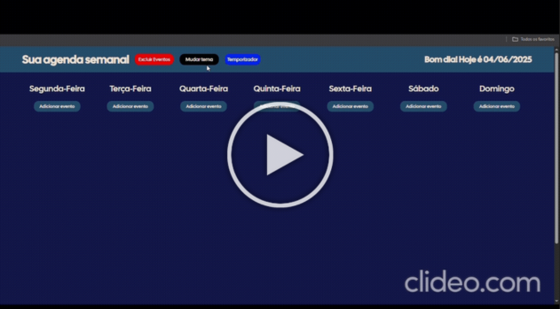
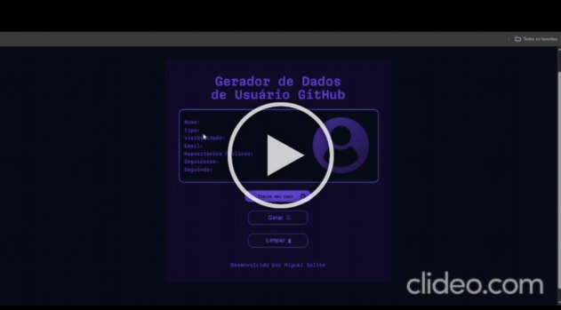

Projeto Planner Semanal
Objetivos do Projeto: Otimizar o seu dia a dia, com uma semana planejada tudo flui bem, além de organizar a sua rotina e ter mais produtividade. Também visei testar minhas habilidades em JS, HTML e CSS puros.
Projeto Consulta Dados GitHub
Objetivos do Projeto: Um site no qual você pode digitar o seu user do GitHub e irão aparecer todos os seus principais dados e seu avatar